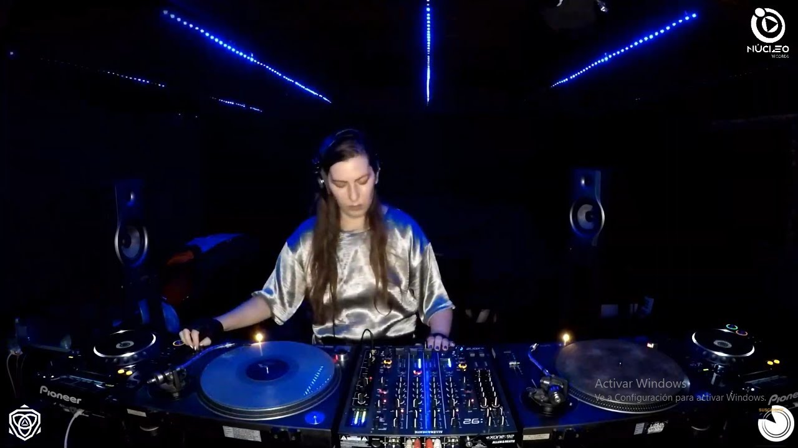

ARGENTINAS
Romina Cohn
dj, Compositora, Productora
Desde muy chica, a los 11 años, Cohn jugaba en su casa con dos bandejas Technics heredadas de su primo Sergio, ex DJ, quien decidió cambiar las cabinas de DJ por cabinas de piloto de Jumbo 747 en Aerolíneas Argentinas; de igual forma heredó una colección de vinilos de acid house y techno. El portero del edificio donde vivía con sus padres también había sido DJ en plena época de música disco, y este también decide regalarle su batea. A su tan corta edad, Cohn, hereda discos de Cerrone, Gino Soccio, Kraftwerk, Telex, Gary Numan, Adonis, Phuture, entre otros artistas, que marcaron una gran influencia para ella.
Su carrera comienza a los 16 años, como ayudante en la discoteca de culto Morocco, en Buenos Aires. Allí conoce a DJ Hell, quien escucha su música e instantáneamente la integra a su sello alemán, International Deejay Gigolo Records. Así, comienzan sus giras internacionales, tocando en los clubes y los festivales más prestigios del mundo, como el Winter Music Conference (Miami, Estados Unidos), Mayday (Dortmund, Alemania, y Katowice, Polonia), Love Parade (Berlín, Alemania), Creamfields (Buenos Aires), Music Und Machine (Berlín), Sonar (Barcelona, España), y FIB (Benicasim, España).
Romina Cohn también mantuvo contacto con su público a través de su programa de radio Late Night en la radio 95.1 FM en Buenos Aires desde 2004 hasta 2008. También edita internacionalmente varios EPs, remixes y participa en compilados de diferentes sellos discográficos. Remixa a Babasónicos, Bajofondo Tango Club (banda del productor, músico y ganador de dos Premios Óscar, Gustavo Santaolalla), a la banda francesa Trisomie 21, junto a Ezequiel Araujo, David Carretta, L.A. Williams y otros artistas.